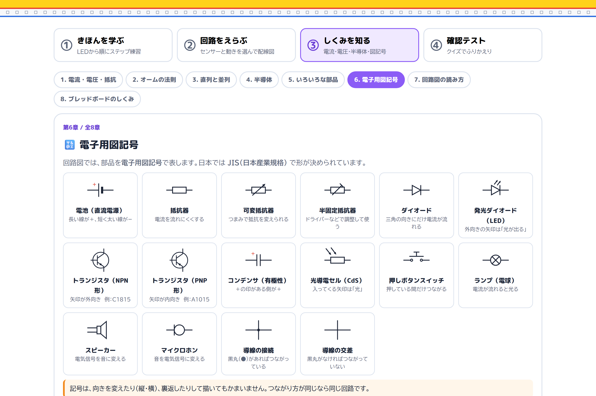
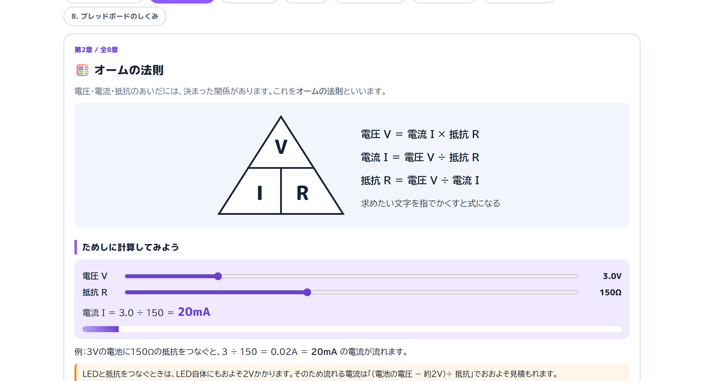

About
「配線図が読めない」で止まらない授業へ
中学校 技術・家庭科（技術分野）のエネルギー変換では、センサーを使った回路づくりに取り組みます。ところが、プリントの配置図とブレッドボードを見くらべる作業でつまずく生徒は少なくありません。
回路ナビは、「なにに反応させる？」「なにを動かす？」「動き方は？」の3つを選ぶだけで、その場でブレッドボードの配線図を描き出します。完成図だけでなく、1本ずつの組み立て手順、部品の向きの注意、画面の中での動作確認まで、同じ画面でひと続きに扱えます。
さらに、電流・電圧・半導体・電子用図記号・回路図の読み方を図で学べる「しくみを知る」と、52問の「確認テスト」も入っているので、知識の習得 → 製作 → ふりかえりまでを1つのツールで扱えます。
回路データは、授業で実際に配布しているプリントの配置図をもとにしています。
機能一覧
学ぶ → えらぶ → 組み立てる → ためす → ふりかえる
画面の上の4つのボタンで、①きほんを学ぶ ／ ②回路をえらぶ ／ ③しくみを知る ／ ④確認テスト を切りかえます。開くと①きほんを学ぶのステップ1から始まります。
いきなりセンサー回路に入らず、LED1個を光らせるところから順番に積み上げるモードです。直列・並列 → 抵抗器 → 半固定ボリューム → センサー＋トランジスタ → メロディIC → ディレイ回路と、11ステップでセンサー回路のしくみにたどりつきます。
ステップごとに「このステップの解説」が付いていて、部品のイラスト（足の向き・カラーコード）、電子用図記号で描いた回路図、動きのグラフを見ながら、なぜそうつなぐのかを確かめられます。
💡ステップ1〜4：LEDと直列・並列LED1個を光らせたあと、「2個にするには？」──1本道（直列）につなぐと電圧が足りず光らないことを確かめ、道を分ける並列で2個 → 4個とふやしていきます。
🎚️ステップ5〜6：抵抗器と半固定ボリューム固定抵抗を入れる意味、つまみで抵抗を変える半固定ボリュームのはたらきを扱います。
🌙ステップ7〜9：センサー＋トランジスタ「トランジスタは小さな電気で大きな電気を切りかえるスイッチ」。CdSで暗さに反応する回路、感度調整、人感センサーへと進みます。
⏱️ステップ10〜11：メロディICとディレイ回路コンデンサが「じわっと鳴りはじめる・じわっと消える」をつくるしくみを、オンディレイ・オフディレイの2つの回路で確かめます。
📘どのステップにも図つきの解説LED・抵抗器・トランジスタ・CdS・人感センサー・コンデンサなどの部品図と回路図を、ステップの内容に合わせて表示。「もっとくわしく」から③しくみを知るの該当する章へ移れます。
①なにに反応させる？（明るさ・人・音・赤外線から2つまで）②なにを動かす？（LED／メロディ）③動き方は？（オフディレイ／オンディレイ）── この3つを選ぶだけで回路が決まります（URLに ?s= などを付けて開くと、このモードから始まります）。センサーの組み合わせ17通り × LED／メロディの2通りで、34の配線図を収録しています。
☀️明るさは「暗いとき／明るいとき」を切りかえCdSを使った回路は、どちらで反応させるかをカードの中で選べます。
📈オン／オフディレイをグラフで示す「すぐ動いて、ゆっくり止まる」「ゆっくり動きだし、ゆっくり止まる」のちがいを、言葉と波形の両方で表示します。
🚫できない組み合わせは理由を説明「音＋赤外線」や、音・赤外線でのオンディレイなど、実際には動かない選択は、なぜ動かないのかを文章で返します。
🔗URLで直接ひらける?s=person,light-dark&out=led&d=off のように指定すると、その回路を開いた状態でリンクを配れます。
実物のブレッドボードと同じ穴の並び（X・A〜J・Y列）で、ジャンパー線・抵抗器・トランジスタ・センサーの位置をそのまま描き出します。抵抗器はカラーコードの帯まで色分けしてあるので、図と実物を見くらべながら部品を選べます。部品をタップすると、その部品のはたらきと、さしこむ穴の位置が表示されます。
🎨抵抗器はカラーコードで表示10kΩ（茶・黒・橙）、22kΩ（赤・赤・橙）など、帯の色をそのまま描いています。「使う部品」一覧にも色の並びを併記。
👆部品をタップすると役わりがわかる「トランジスタ＝小さな電気で大きな電気を切りかえるスイッチ」のように、その部品が何をしているかを1つずつ説明します。
🔍「大きく見る」で拡大スマートフォンの小さな画面でも、ボードを拡大して穴の位置を確かめられます。
📝先生用メモその配線図がプリントの配置図そのままなのか、LEDとメロディを入れかえたものなのか、新しく設計したものなのかを明記しています。
完成図をいきなり写すのではなく、「X-3 と A-3 をつなぐ」「V+ を C-3、Vo を D-4、V− を C-5 に差す」のように、1部品ずつ順番に示します。これから差す部品は光って示され、差し終わった部品はうすく残るので、どこまで進んだかが一目でわかります。
🔢穴の番号で指示行（X・A〜J・Y）と列（1〜23）の番号で位置を言葉にするので、実物のボードと照らし合わせやすくなります。
✨いま差す部品が光る該当する穴にリングが表示され、済んだ部品は淡色で残ります。作業の中断・再開がしやすい設計です。
📊進捗バーで残りがわかる「13 / 20」のように、全体のどこにいるかを常に表示します。
⌨️矢印キーで進めるパソコンでは ← → キーで手順を送れるので、手を動かしながら操作できます。
部品がそろう前でも、画面の中で回路の動きを確かめられます。「まわりを暗くする」「音を出す」「人がいる状態にする」などを切りかえると、ボード上のLEDが光り、メロディの回路ならスピーカーから実際に音が鳴ります。オフディレイならじわっと消え、オンディレイならじわっと鳴りはじめる──時間の変化がそのまま目と耳でわかります。
🌗センサーの状態を切りかえ選んだセンサーに応じて、明るさ・人の有無・音・赤外線のボタンが出ます。
🔊メロディは実際に音が出るWeb Audio でメロディICの音を再現します。教室で使うときのために「音を消す」ボタンも用意しています。
📶メーターで変化を見るコンデンサにたまった電気の量をバーで表示。「なぜゆっくりなのか」を数の変化として見られます。
🔁リセットボタンも再現押しボタンスイッチを押してコンデンサの電気を逃がす動きも、画面上で試せます。
極性のある部品だけを自動で抜き出して、回路ごとに注意書きを出します。コンデンサの逆差し、トランジスタの向き、人感センサーの3本足の役わりなど、こわれる・動かない原因になりやすいところを先に伝えます。項目をタップすると、その部品がボードのどこにあるかが光ってわかります。
🔋コンデンサ・LEDの極性＋（長い足）と−（短い足）。逆に差すとこわれる／光らないことを明示します。
🔺トランジスタ・メロディICの向き平らな面・丸い面の向きと、3本の足（E・C・B）の並びを注意します。
📋「使う部品」を個数つきで表示ジャンパー線19本、抵抗10kΩ×3 …… のように、その回路に必要な部品と個数が一覧になります。部品の準備や片づけの確認に使えます。
💡タップでボード上を光らせる「人感センサー」をタップすると、ボードのどこに差すのかがその場で光ります。
配線の前に知っておきたい電気の知識を、8つの章にまとめました。水のたとえ、電子用図記号の一覧、回路図と実体配線図の見くらべなど、図を中心に説明しています。「回路図の読み方」では、ステップ7の回路図とブレッドボードを並べて、「回路図の●がブレッドボードのどの穴にあたるか」を確かめられます。

電子用図記号（JIS）16種

オームの法則 ─ スライダーで計算
💧1. 電流・電圧・抵抗 ／ 2. オームの法則 ／ 3. 直列と並列水のたとえ図で量のイメージをつかみ、電圧と抵抗をスライダーで動かして電流を計算。直列と並列は表で比べます。
💎4. 半導体 ／ 5. いろいろな部品導体・半導体・絶縁体、ダイオードの一方通行、LED、トランジスタのスイッチ作用・増幅作用。抵抗のカラーコード、CdS、コンデンサ、センサーのはたらき。
🔣6. 電子用図記号 ／ 7. 回路図の読み方JIS の記号16種を一覧に。回路図のルール（●は接続、電池は長い線が＋ など）と、回路図・実体配線図の対応。
🔌8. ブレッドボードのしくみどの穴どうしが中でつながっているかを色分けで表示。「同じグループに両足をさすと部品がはたらかない」といったつまずきも先回りして説明します。
電気の基礎・半導体・部品・図記号と回路図・ブレッドボードと動き方の5つのはんいから、4択で出題します。答えるとすぐに正解と解説が出るので、まちがえたその場で理解をなおせます。図記号の問題は記号の図を見て答えます。
🎯はんいと問題数を選べる「すべて」か5つのはんいから選び、10問・20問・ぜんぶで出題。問題の順番と選択肢の並びは毎回入れかわります。
💬1問ごとに解説「オームの法則より 3 ÷ 100 ＝ 0.03A」のように、なぜその答えになるのかを毎回表示します。
🔁まちがえた問題だけやり直し結果画面で、まちがえた問題と解説を一覧表示。「まちがえた問題だけ」でもう一度ちょうせんできます。得点が低いときは③しくみを知るへの案内も出ます。
🔒記録は残しません得点や解答はどこにも送信・保存しません。授業のふりかえりや家庭学習で気軽に使えます。
参考作品
実際に作った7つの回路（動画）
授業で製作した参考作品です。動画で動きを確かめてから、同じ回路を回路ナビで開いて配線を確認できます。「回路ナビで開く」を押すと、その作品と同じ設定（センサー・動かすもの・動き方）が選ばれた状態で開きます。
1
暗くなるとLEDが点灯し、明るくなると徐々に消灯する。
☀️ 明るさ（暗いとき）💡 LED⏱ オフディレイ
2
人がいて、明るいと徐々にメロディが流れ出す。人がいない、または暗いと徐々に消音する。
🚶 人☀️ 明るさ（明るいとき）🎵 メロディ⏱ オンディレイ
3
音がするとLEDが点灯し、音がなくなると徐々に消灯する。
4
赤外線を受光するとLEDが点灯し、その後、赤外線がないと徐々に消灯する。
5
人がいて、暗いとLEDが点灯し、人がいないまたは明るいと徐々に消灯する。
🚶 人☀️ 明るさ（暗いとき）💡 LED⏱ オフディレイ
6
暗くて、音がするとLEDが点灯し、明るいまたは音がしないと徐々に消灯する。
🎤 音☀️ 明るさ（暗いとき）💡 LED⏱ オフディレイ
7
人がいると徐々にメロディが流れ出す。人がいないと、徐々に消音する。
動画・回路図は、授業用に公開している Google サイト
「【参考作品】回路」
の内容を引用しています。Google ドライブ上のファイルのため、共有設定によっては動画・PDFの表示にログインが必要になる場合があります。その場合でも、回路ナビ本体はそのまま利用できます。
授業での使い方
こんな場面で使えます
1️⃣導入：電気のしくみとセンサー回路を知る「③しくみを知る」で電流・電圧・図記号を確認したあと、「①きほんを学ぶ」を全体提示で1〜11まで送りながら、LED → 抵抗 → トランジスタ → コンデンサの順に、ステップごとの図解を使って説明します。
2️⃣構想：どんな作品にするか決める参考作品の動画を見て、自分の作品の「反応するもの」と「動くもの」を決めます。「回路をえらぶ」で候補を試しながら決められます。
3️⃣製作：手元で配線を確認しながら進める生徒の端末で「組み立て手順」を開き、1本ずつ確認しながらブレッドボードに差していきます。教師は机間指導に専念できます。
4️⃣検証：動かないときの原因さがし「向きに気をつける部品」と「ためしてみる」を使って、配線ミスか部品の向きかを切り分けます。
5️⃣まとめ：確認テストでふりかえる単元の終わりに「④確認テスト」。まちがえた問題の解説を読み、「まちがえた問題だけ」でやり直します。
🏠家庭学習・欠席時のフォローURLひとつで同じ画面が開くので、欠席した生徒にその回路や章のリンクを渡すだけで追いつけます。
技術仕様
| 項目 | 内容 |
|---|
| 構成 | HTML / CSS / JavaScript（フレームワーク不使用・1ファイル完結） |
| 配線図 | SVGで動的生成（部品の位置データから毎回描画） |
| 収録回路 | センサーの組み合わせ17通り × LED／メロディ ＝ 34の配線図 |
| モード | ①きほんを学ぶ ／ ②回路をえらぶ ／ ③しくみを知る ／ ④確認テスト（開くと①から始まります） |
| きほんのステップ | 11ステップ（12画面）・すべてに図つきの解説 |
| しくみを知る | 8章（電流・電圧・抵抗／オームの法則／直列と並列／半導体／いろいろな部品／電子用図記号／回路図の読み方／ブレッドボードのしくみ） |
| 確認テスト | 4択52問（5つのはんい）・1問ごとに解説・まちがえた問題のやり直し |
| 図 | 回路図・部品図・グラフはすべてSVGで描画。電子用図記号は JIS C 0617 の形 |
| 対応センサー | CdS（光）／人感センサー／マイク（音）／赤外線受光センサー |
| 主な部品 | 抵抗（150Ω・4.7k・10k・22k・68k・200kΩ）／半固定抵抗（100kΩ・1MΩ）／トランジスタ C1815・A1015／コンデンサ 47µF／メロディIC／スピーカー／押しボタンスイッチ／LED |
| 音 | Web Audio API（メロディICの動作を再現／ミュート可） |
| 外部通信 | なし（Webフォントの読み込み以外、サーバーとの通信はありません） |
| データ保存 | なし（個人情報・学習履歴・テストの得点を一切保存しません） |
| 推奨環境 | Google Chrome / Microsoft Edge / Safari（タブレット・スマートフォン対応） |
| URLパラメータ | ?mode= モード（basics / navi / learn / quiz）／ ?ch= しくみの章 ／ ?s= センサー ／ ?out= 動かすもの ／ ?d= 動き方 ／ ?view= タブ ／ ?step= 手順 ／ ?basics= きほんのステップ |